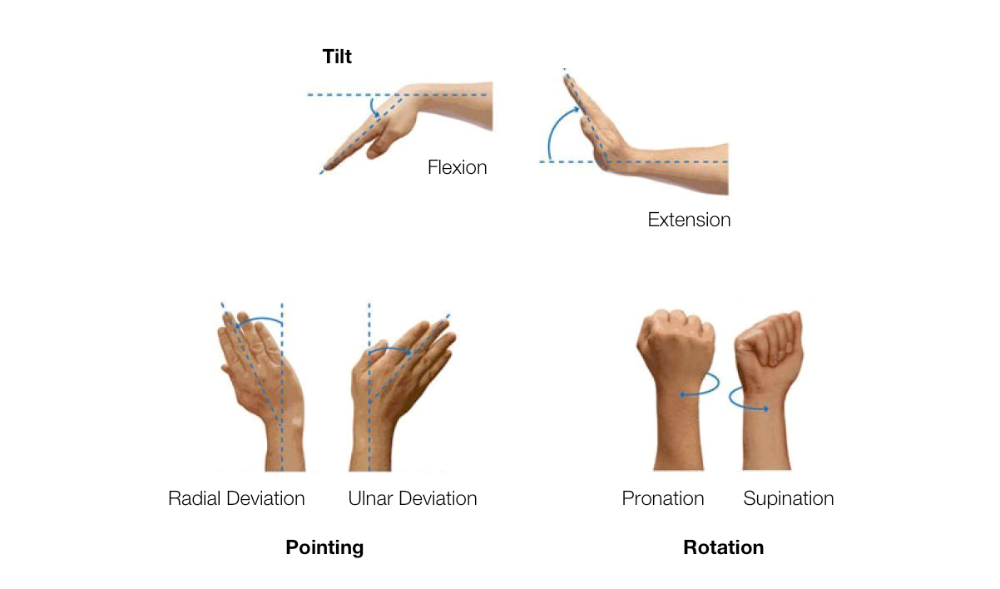
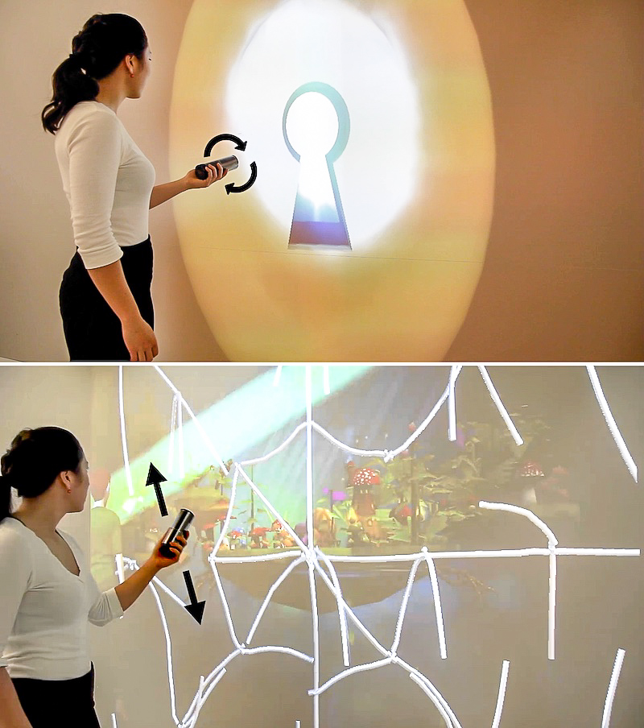

MagicWand A handheld device with a fully cylindrical user interface. The device, dubbed MagicWand, has a wide range of possible applications, including the use of as a game controller. Timeline: Winter 2016 Project: Research conducted at the Human Media Lab, Queen’s University Type: Product Design, Interaction Design, Prototyping, Research & Evaluation Affordances Of Digital Devices The Problem Modern smartphones with traditional flat screens offer poor affordances for gestural interactions. The flat form factor prevents a comfortable grip hindering wrist movements. Display area of flat devices can only be viewed from one side, and the visibility reduces when the device is rotated. The Challenge How might we create a new display form factor that will offer physical affordances for actions that are quite different from those of a traditional flat form factor of a smartphone. The Solution A cylindrical device with a cylindrical display form factor that allows users to perform natural gestures and to explore the display area. Interaction design was done based on how people handle day-to-day objects. The cylindrical form factor provides a comfortable grip when performing gestural interactions. Success measures of the product revolve around how quickly a user can guess and performs an interaction based on the affordances provided by the cylindrical form factor and the visuals on the display. Research To bring our product into fruition, we first had to empathize and understand how humans associate with affordances. We started by looking for inspirations from Don Norman’s work on affordances 1. We learned that affordances are generated by matching the fit of the body under action to the physical shape of an object. For example, a vertical door handle affords pulling, whereas a horizontal flat bar affords pushing to open 2. Your Wrist Don’t Lie Ideation Process Following our primary research, I then moved onto defining design parameters for gestural input devices. In the design process of MagicWand, I considered the following design parameters. Cylindrical Shape and Ergonomic Tool Fit Optimal Diameter and Length Tradeoff Conformability of the FOLEDs Conforming with Prior Gestural Game Controller Designs Unconstrained Motion Optimal Design Space for Wrist Gestures We envisioned MagicWand as an extension of the user’s wrist, supporting the maximum number of degrees of freedom provided by its joints.  The wrist is capable of three sets of distinct movements: flexion and extension, radial deviation and ulnar deviation, pronation and supination. We based our initial set of gestures for MagicWand on the above capabilities of the wrist: providing gestures for rotation (pronation/supination), tilt (flexion/extension), as well as pointing (deviation). Motion gesture design was also inspired by everyday object handling. Motion gesture design was also inspired by everyday object handling. For example, actions such as turning a key to unlock a door, or turning a door knob to open a door, involve rotation through pronation/supination of the wrist. When handling cylindrical fluid containers such as bottles, the object is naturally tilted through flexion extension of the wrist to drink from or pour liquid out. Pointing with a cylindrical object such as a remote control, laser pointer, or stick involves radial and ulnar deviations of the wrist. Deviations of the wrist becomes a motion gesture when cutting or slashing using tools such as knives and swords. We were similarly inspired by the swirl motion used when stirring food with a kitchen utensil such as a spoon, which involves a combination of deviation and flexion/extension actions by the wrist. The Physical Product MagicWand is a cylindrical display device consisting of two 5.5” Flexible Organic Light-Emitting Diode (FOLED) screens wrapped around a 3D printed body. MagicWand features a smartphone running the Android operating system. Gesture recognition allows the use of the wand movements as a form of input. Physical Prototype Design. (1) 3D printed body, (2) Android boards, (3) Flexible OLED Displays, (4) Cooling fan. Fantasy Game Application To highlight some of MagicWand’s capabilities, we developed a first-person fantasy adventure game for aspiring wizards. … — a candle, a wand, a key, a whirlwind, a sword, a magic potion, and a spoon — … This game requires the player to use several tools that fit a cylindrical form factor — a candle, a wand, a key, a whirlwind, a sword, a magic potion, and a spoon — to interact with characters that fit a cylindrical form. The game’s goal is to collect all the characters and transport them from the wand display to a virtual magical island on a large external display, through the application of gestures.  A player interacting with MagicWand, (Top) unlocking a dungeon door using a virtual Key, (Bottom) destroying a spider web that obstructs the player’s path with a Sword. A player interacting with MagicWand, (Top) unlocking a dungeon door using a virtual Key, (Bottom) destroying a spider web that obstructs the player’s path with a Sword. Reflection & Takeaways The ambition for this project was exciting but also daunting. Building a completely new hardware device and then software applications that runs on it was a huge challenge. During the process I broke more than 20 flexible OLED screens. However, with the help of my team at the end I was able to create a novel display device and build a game application to showcase its potential. MagicWand was designed with specific design goals and under particular technical constraints. Although the empirical findings support the design rationale, many of the details in the experimental results pertain only to the specific hardware implementation. When designing interactions with MagicWand we primarily relied solely on gesture control. All tasks were triggered only using motion gestures, which can be more difficult to discover than touch interactions. Based on these limitations, future work needs to be conducted to explore the interactions with both touch input and gestures combined. Video Design of Everyday Things ↩ Norman Doors ↩